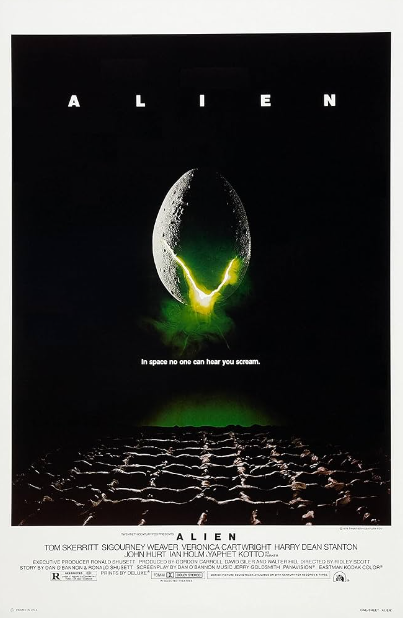
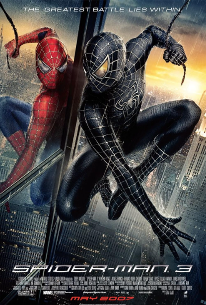
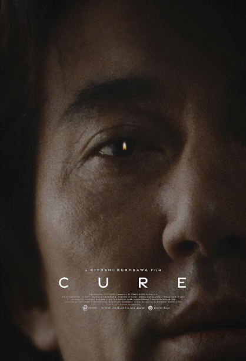

When an insatiable great white shark terrorizes the townspeople of Amity Island, the police chief, an
oceanographer and a grizzled shark hunter seek to destroy the blood-thirsty beast.

Alien
1 hours 57 mins
1979 Directed by Scott Ridley
"Got a wonderful defense mechanism. You don't dare kill it."
During its return to the earth, commercial spaceship Nostromo intercepts a distress signal from a
distant planet. When a three-member team of the crew discovers a chamber containing thousands of eggs on
the planet, a creature inside one of the eggs attacks an explorer. The entire crew is unaware of the
impending nightmare set to descend upon them when the alien parasite planted inside its unfortunate host
is birthed.

Spiderman 3
1 hours 57 mins
2007 Directed by Sam Raimi
"It's the choices that make us who we are, and we can always choose to do what's right."
The seemingly invincible Spider-Man goes up against an all-new crop of villains—including the
shape-shifting Sandman. While Spider-Man’s superpowers are altered by an alien organism, his alter ego,
Peter Parker, deals with nemesis Eddie Brock and also gets caught up in a love triangle.

Cure
1 hours 57 mins
1997 Directed by Kiyoshi Kurosawa
"All the things that used to be inside of me... now they are all outside"
A wave of gruesome murders is sweeping Tokyo. The only connection is a bloody X carved into the neck of
each of the victims. In each case, the murderer is found near the victim and remembers nothing of the
crime. Detective Takabe and psychologist Sakuma are called in to figure out the connection, but their
investigation goes nowhere…